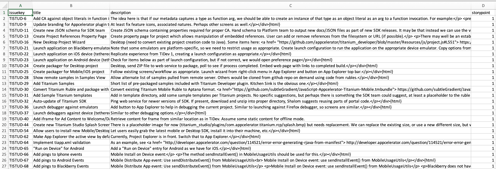
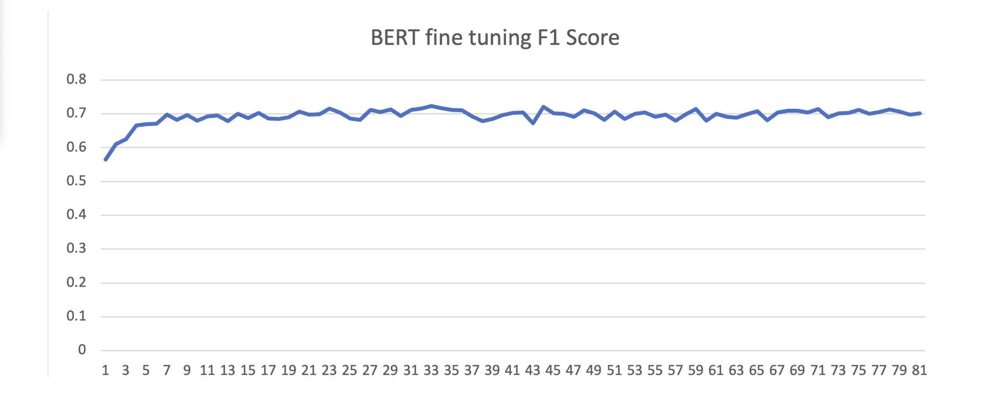
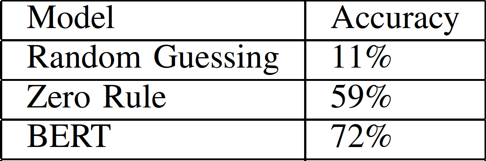

Effort and Time Estimation on Agile Technonoly Projects using Transformer-Based Models
Role
For this project, I was part of a team of two people and for the lecture "CSI5137C:
Applications of NLP and ML in Software Engineering" We decided to make use of a Large
Language Model to tackle a real-life problem.
Problem
In the technology sector, a team should have a structured way to plan and develop a project
, and there are different ways to do this depending on the team, the company and the type and
size of the project. For some years, Agile and Scrum have gained popularity due to their
efficiency and structure in developing and deploying production technology and software-based
project. Now, this does not mean that Agile is the best solution for all projects, but in
some cases, teams can obtain benefits if the structure is correctly followed.
One disadvantage of working in an Agile project is all the politics it has. For example,
before the project starts or before each "sprint" (or chunk of the project) begins, the
whole team has to propose and approve the "user stories," which are a quick and accurate
description of the client's need. And also assign "story points" to each user story. A
story point is a metric based on the Fibonacci sequence, which describes how much effort
that specific task will require. This number is completely subjective, but it gives
the team a good base to calculate how long the project will take and how to split
certain tasks.
As you can imagine, writing down and assigning a value to each user story is a tedious task
normally assigned to the development team. Which apart from planning, developing and
sometimes even doing production support, it has to waste its time on this step. To avoid this
time-consuming task, some researchers have been investing some time in feeding deep learning
models with the descriptions of the tasks or user stories and then training Natural Language
Processing models to try to estimate the amount of time they will require and also the
number of story points it will also require. This is a complex task, as the technical
language of each company is unique, and the complex words used in the software development
world are difficult to interpret. In the past, some researchers have been using deep
learning models such as Long Short Term Memory models LSTM and achieving a decent
accuracy.
Solution
For this lecture, we proposed the use of transformers and, most importantly, the use of both
BERT and DistilBERT to try to synthesize the features from the text and create an accurate
model capable of understanding the context of the sentences which describe the tasks
in a project, predict how much effort this task will require.
For our project, we found a vast dataset which contains several essential features, such as
the user story, the title of the user story and the amount of story points. The good thing
about this dataset is that it is divided into several CSV files, each containing the
user stories of specific projects. This allowed the original authors to analyze the
performance of the models by category. In our case, this was unnecessary, so you will
find a merged CSV file within my repository. The image below shows an example of one of the
files.

Before training the models, we had two baselines: the first one is a Gaussian guesser
, and the second one was a Zero Rule, which predicts everything as the class with the most significant
number of elements. In the graph below, you can see the F1 score of BERT's fine-tuning process.

Last but not least here is a compartive table of the accuracy obtained from our base lines
and the fine-tuned BERT.

Code and Further Information
Please feel free to use our work citing us, in this link you will find our repository
with the notebooks we used and the complete dataset
link to data and code